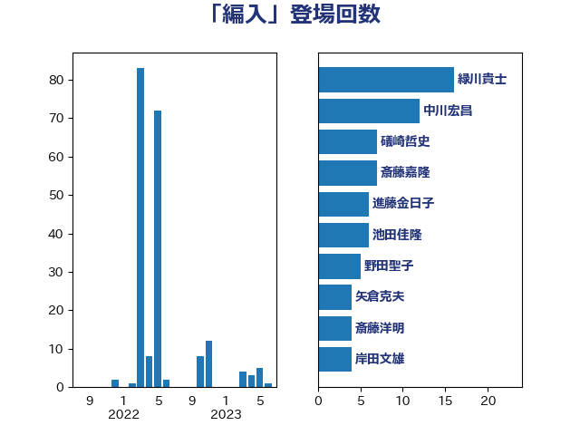

単語「編入」

| 緑川貴士 | 立憲民主党 | 16 回 |
| 中川宏昌 | 公明党 | 12 回 |
| 礒崎哲史 | 国民民主党 | 7 回 |
| 斎藤嘉隆 | 立憲民主党 | 7 回 |
| 進藤金日子 | 自由民主党 | 6 回 |
| 池田佳隆 | 自由民主党 | 6 回 |
| 野田聖子 | 自由民主党 | 5 回 |
| 矢倉克夫 | 公明党 | 4 回 |
| 斎藤洋明 | 自由民主党 | 4 回 |
| 岸田文雄 | 自由民主党 | 4 回 |
| 守島正 | 日本維新の会 | 4 回 |
| 伊藤岳 | 日本共産党 | 4 回 |
| 赤池誠章 | 自由民主党 | 3 回 |
| 西岡秀子 | 国民民主党 | 3 回 |
| 高橋千鶴子 | 日本共産党 | 2 回 |
| 長谷川淳二 | 自由民主党 | 2 回 |
| 鈴木敦 | 国民民主党 | 2 回 |
| 野田国義 | 立憲民主党 | 2 回 |
| 空本誠喜 | 日本維新の会 | 2 回 |
| 柳ヶ瀬裕文 | 日本維新の会 | 2 回 |
| 小林一大 | 自由民主党 | 2 回 |
| 寺田稔 | 自由民主党 | 2 回 |
| 前川清成 | 日本維新の会 | 2 回 |
| 高良鉄美 | 無所属 | 1 回 |
| 重徳和彦 | 立憲民主党 | 1 回 |
| 遠藤敬 | 日本維新の会 | 1 回 |
| 萩生田光一 | 自由民主党 | 1 回 |
| 荒井優 | 立憲民主党 | 1 回 |
| 簗和生 | 自由民主党 | 1 回 |
| 篠原豪 | 立憲民主党 | 1 回 |
| 石田真敏 | 自由民主党 | 1 回 |
| 石井正弘 | 自由民主党 | 1 回 |
| 玄葉光一郎 | 立憲民主党 | 1 回 |
| 渡辺周 | 立憲民主党 | 1 回 |
| 松原仁 | 立憲民主党 | 1 回 |
| 岬麻紀 | 日本維新の会 | 1 回 |
| 山添拓 | 日本共産党 | 1 回 |
| 小島敏文 | 自由民主党 | 1 回 |
| 世耕弘成 | 自由民主党 | 1 回 |